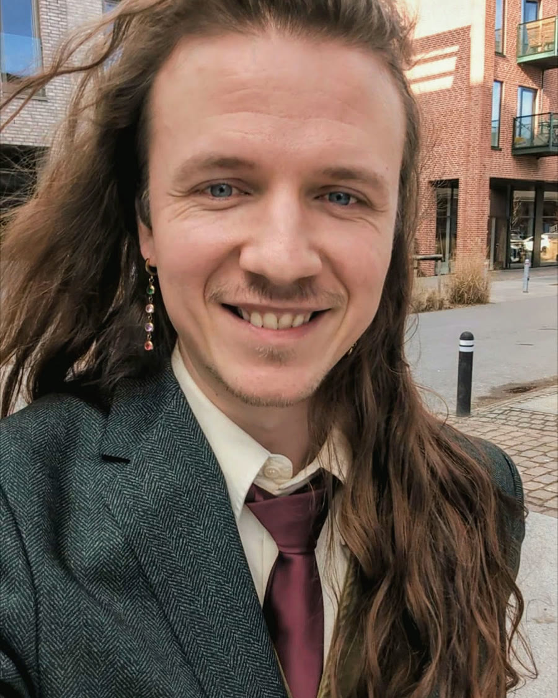

Aarhus Folk Festival
Fire dage med koncerter, dans og workshops. Jeg bygger og vedligeholder festivalens website.
aarhusfolkfestival.dk ↗Jeg bygger websites, værktøjer og fællesskaber. Aarhus.
Her kan du se, hvad jeg har lavet. Går du selv med en idé til et lille kulturprojekt, vil jeg gerne høre om den.

Fire dage med koncerter, dans og workshops. Jeg bygger og vedligeholder festivalens website.
aarhusfolkfestival.dk ↗Danseaftener i seks byer: først en times undervisning i folkedans, så bal til levende musik. Jeg har overtaget siden som webmaster og bygget den forfra, med alle byernes datoer samlet ét sted.
nordiskdans.dk ↗En videospilklub, der fungerer som en bogklub. Jeg startede den; 29 kommer til møderne, og 129 er med på Discord.
gamestormers.dk ↗Jeg har bygget og driver platformen, som spillestedet turkis i Aarhus nu bruger til vagter, events og frivilliginformation. Jeg er selv frivillig backstage på huset.
crew.turkis.nu ↗En pixelcafé til læsning. Den kører i browseren, mens du læser en rigtig bog.
hygge.kasper-krog.dk ↗Kind projects
Driver du et lille kulturprojekt, en forening eller laver du kunst, og mangler du et ordentligt website? Skriv. Nogle gange gør jeg det gratis.
Formen betyder mindre, end om jeg kan være til nytte. Det kan være:
Jeg bor i Aarhus, hvor jeg bygger websites, driver en spilklub og er frivillig på et spillested og en folkefestival.
Dansk eller engelsk. En løs idé er helt fin.